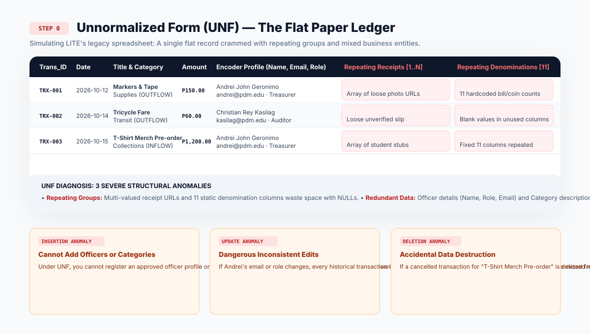
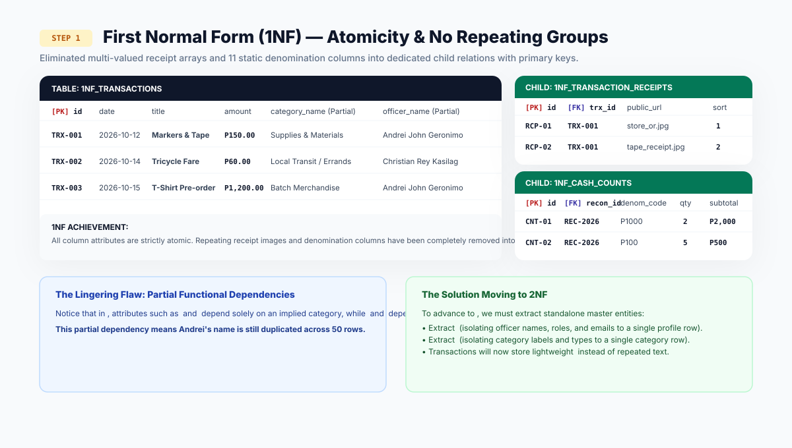

FINLITE: Web-Based Financial Ledger and Automated Report Generation System
Relational PostgreSQL Architecture, 3NF Normalization & Live CRUD Demonstration for the League of Information Technology Enthusiasts (LITE)
No Dedicated Physical Office
LITE operates under severe collegiate physical constraints, possessing no dedicated physical office, private conference room, or institutional workstation.
Administrative planning, audit sessions, and ledger consultations take place transiently in campus corridors, student lounges, event booths, or at a communal faculty table located in the College of Computer Studies Office on the second floor.
Single Metal Cashbox in Program Director's Office
Money custody follows strict institutional protocols where all physical cash holdings, petty cash reserves, and accumulated coin collections are secured inside a single small metal cashbox stored inside a locked drawer within the Program Director's Office.
Because the cashbox never leaves campus, off-campus purchasing expeditions for event supplies cannot utilize upfront cashbox money directly, requiring out-of-pocket frontings.
High-Stress Face-Value Turnover Protocol
Leadership transitions occur annually under a strict face-value turnover protocol.
The physical cash inside the small metal cashbox must match the exact numerical balance attested on the audited final financial report down to the exact centavo before outgoing officers receive institutional clearance for graduation and academic credentials.
Strict Institutional Segregation of Duties
• LITE Treasurer: Operates as the physical cash custodian, encodes collections and disbursements, and counts cashbox denominations.
• LITE Auditor: Acts as the transactional verification checkpoint; inspects receipts, approves records, and flags discrepancies.
• Club Advisers: Provide administrative governance, authorize user roles, and endorse cash shortages.
• College Leadership (Dean & Director): Reviews the completed dossier and issues institutional clearance.
Personal Advance Vulnerability (Abono) & Lost Receipts
Because LITE has no bank account and operates from a single locked cashbox, off-campus purchasing requires officers and advisers to front personal capital.
The Crisis: Thermal paper receipts gathered during fast-paced events frequently fade, crumple, or get lost before reaching campus. Loose slips lack two-person tracking (who paid vs. who is claiming). Unaudited receipts force students and advisers to absorb institutional costs personally.
FinLITE Database Solution: 3NF advances_payable, advance_disbursements, and advance_receipts tables supporting dual-entity tracking, compressed photo uploads, and partial payout states.
Administrative Leakage in Non-Receipted Micro-Transit
Non-receipted small cash purchases, such as jeepney and tricycle fares between PDM and Marilao Poblacion, emergency photocopies, or public market craft purchases, lack printed commercial invoices.
The Crisis: Documented on loose paper scraps, sticky notes, or unstructured Messenger chat screenshots that get smudged or mislaid over a multi-month semester, creating unliquidated expense leakage.
FinLITE Database Solution: Dedicated Non-Receipted Transit Logging with standardized travel route presets, itemized descriptions, and digital supervisory officer verification.
Cumulative Turnover Discrepancies & Out-of-Pocket Settlements
Daily transaction tracking and paper ledger updates are frequently delayed until weeks or months after major departmental events.
The Crisis: Bookkeeping errors, duplicate entries, and unrecorded petty disbursements accumulate unnoticed. At year-end turnover, when physical cash is compared with the paper balance, unexplained cash shortfalls emerge. Outgoing student officers are forced to pay these shortfalls out of their own personal pockets simply to obtain graduation clearance.
FinLITE Database Solution: Real-time ledger calculations, immutable audit logs, and certified Turnover Reconciliation Certificates.
Latent Discrepancies & Slow Manual Cash Computations
Physical cash counts, sorting bills from ₱1,000 down to one-peso coins and centavos, are performed weeks or months late.
The Crisis: Officers perform manual cross-multiplication against loose paper tallies. When arithmetic cash variances emerge, the resulting mandatory spending freeze paralyzes club activities while officers struggle to locate the discrepancy.
FinLITE Database Solution: Interactive digital keypad covering all 11 Philippine currency denominations with instant real-time variance cross-referencing against the theoretical book balance.
Signatory Rejections & 6-Stage Routing Bottlenecks
Manual preparation of end-of-term liquidation reports using desktop word processors results in formatting non-compliance with College of Computer Studies standards (uneven table borders, misaligned decimals).
The Crisis: If a typographical error or arithmetic defect is caught by the Program Director or Dean at stage 5 or 6, the report is rejected. Officers must manually re-compute, re-edit, reprint on institutional bond paper, and restart physical wet-ink routing from stage 1.
FinLITE Database Solution: 1-click institutional DOCX generation with borderless financial tables, automated 4-up receipt sheets, and pre-formatted wet-ink signature blocks.
Why PostgreSQL on Supabase over MongoDB?
1. Strict ACID Compliance over Eventual Consistency: Financial ledgers cannot tolerate synchronization delays. Every inflow, disbursement, and denomination count must commit atomically.
2. Foreign Key Referential Integrity: Guarantees that child records (such as transaction_receipts or cash_reconciliation_items) cannot exist as orphans if parent records are modified.
3. Exact Base-10 Decimal Precision: PostgreSQL decimal(12,2) eliminates IEEE-754 floating-point rounding errors inherent in loose document stores.
4. Managed Cloud Infrastructure: Dedicated connection pooler (Supavisor on port 6543) with SSL encryption, daily point-in-time backups, and sub-millisecond query responses for Vercel.
Unnormalized Form (UNF) — The Flat Paper Ledger

First Normal Form (1NF) — Atomicity & No Repeating Groups

Second Normal Form (2NF) — Removing Partial Dependencies

Third Normal Form (3NF) — Pure Non-Key Independence

Complete 3NF Entity-Relationship Diagram (ERD)
Data Dictionary Specifications (18 Tables)
Database Connection Security & Zero Credential Exposure
• Server Connection Pooler: Managed Supabase Supavisor connection pooler on port 6543 with SSL enforcement (sslmode=require), preventing connection limits during concurrent transactions.
• Zero Client Secrets: Client browser bundles never receive database credentials or master keys. All queries originate from authenticated server-side API routes.
• Environment Variable Isolation: Credentials isolated in encrypted environment variables. Clean .env.example provided without live secrets.
• Resilient Error Handling: Server-side try-catch blocks gracefully handle connection drops and return sanitized JSON responses without exposing raw SQL stack traces.
How FinLITE Creates a Real Financial Record
Step-by-step visual journey: From form submission to permanent dual-table database storage
CHECK > 0)? Invalid data is rejected before touching the DB.transactions and linked into transaction_receipts via UUID.How FinLITE Reads & Calculates Your Money
Step-by-step visual journey: Connecting 4 database tables to display real-time dashboard totals
transactions + categories + profiles (who spent) + receipts in one fast query.SUM(inflows) - SUM(outflows) using exact base-10 decimals, eliminating centavo calculation errors.How the Auditor Verifies a Transaction
Step-by-step visual journey: Enforcing two-stage verification and permanent auditor identity binding
PENDING to green VERIFIED. The Auditor's UUID and exact time are saved.audit_logs, ensuring tamper-evident accountability.Why Financial Records Are Never Truly 'Deleted'
Step-by-step visual journey: Financial Audit Preservation Rule and soft-void mutations
DELETE is prohibited so records never vanish into thin air without explanation.'VOIDED' (struck through). Money is returned to the cashbox balance immediately.audit_logs.Two-Tier Data Integrity: Database Engine & Server Schemas
Tier 1: PostgreSQL Engine-Level Constraints:
• CHECK (amount > 0): Makes negative or zero ledger entries physically impossible at the database engine level.
• UNIQUE constraints on email, denomination codes, and active semester indicators.
• ON DELETE RESTRICT: Prohibits cascading deletions that would orphan financial records.
Tier 2: Server-Side Zod Schemas & Dynamic RBAC:
• Enforces strict MIME types (jpeg/png/webp) and 1MB size limit on receipts.
• Dynamically evaluates capability flags (can_record_inflows, can_reconcile_cash) before query execution.
• Masks internal PostgreSQL stack traces from the browser client.
Dual-Officer Attestation & 11 Currency Denominations
• Dual-Officer Protocol: Treasurer acts as the Counter (physically inputting bill and coin quantities); Auditor acts as the Verifier (witnessing the count and co-signing the session).
• 11 Supported Denominations (denominations master table):
Banknotes: ₱1,000, ₱500, ₱200, ₱100, ₱50, ₱20
Coins: ₱20, ₱10, ₱5, ₱1, ₱0.25 centavos
• Real-Time Variance Formula:
$$\text{Variance} = \text{Counted Cash} - \text{Book Balance}$$
Balanced (Variance = 0) | Shortage (Variance < 0 → Shortage Justification Report) | Overage (Petty Cash Buffer).
• Turnover Reconciliation Certificate: Certifies physical cash matches the audited report down to the exact centavo for graduation clearance.
Production Deployment Architecture & Live Submission URLs
• Frontend (Vercel): Deployed on Vercel Global Edge CDN with automated HTTPS SSL, sub-millisecond response, and Next.js App Router.
• Database (Supabase PostgreSQL): Hosted managed cloud PostgreSQL instance with Supavisor connection pooling on port 6543, daily backups, and RLS policies.
• Live Submission Artifacts Checklist:
1. Live Vercel Frontend URL
2. Live Backend API Health Endpoint (/api/health)
3. Complete 18-Table 3NF ERD Diagram
4. Public GitHub Repository with safe .env.example
5. UNF → 3NF Normalization Paper Evidence.
Conclusion & Committee Defense Q&A
Thank You, Sir Harvey Blue Pardico & Committee Panelists
FinLITE eliminates manual ledger errors, protects student leaders from personal financial liabilities, and delivers an audit-ready, 3NF-compliant relational system for the League of Information Technology Enthusiasts.